Create a bar plot.
Usage
ggbarplot(
data,
x,
y,
combine = FALSE,
merge = FALSE,
color = "black",
fill = "white",
palette = NULL,
size = NULL,
width = NULL,
title = NULL,
xlab = NULL,
ylab = NULL,
facet.by = NULL,
panel.labs = NULL,
short.panel.labs = TRUE,
select = NULL,
remove = NULL,
order = NULL,
add = "none",
add.params = list(),
error.plot = "errorbar",
label = FALSE,
lab.col = "black",
lab.size = 4,
lab.pos = c("out", "in"),
lab.vjust = NULL,
lab.hjust = NULL,
lab.nb.digits = NULL,
sort.val = c("none", "desc", "asc"),
sort.by.groups = TRUE,
top = Inf,
position = position_stack(),
ggtheme = theme_pubr(),
...
)Arguments
- data
a data frame
- x, y
x and y variables for drawing.
- combine
logical value. Default is FALSE. Used only when y is a vector containing multiple variables to plot. If TRUE, create a multi-panel plot by combining the plot of y variables.
- merge
logical or character value. Default is FALSE. Used only when y is a vector containing multiple variables to plot. If TRUE, merge multiple y variables in the same plotting area. Allowed values include also "asis" (TRUE) and "flip". If merge = "flip", then y variables are used as x tick labels and the x variable is used as grouping variable.
- color, fill
outline and fill colors.
- palette
the color palette to be used for coloring or filling by groups. Allowed values include "grey" for grey color palettes; brewer palettes e.g. "RdBu", "Blues", ...; or custom color palette e.g. c("blue", "red"); and scientific journal palettes from ggsci R package, e.g.: "npg", "aaas", "lancet", "jco", "ucscgb", "uchicago", "simpsons" and "rickandmorty".
- size
Numeric value (e.g.: size = 1). change the size of points and outlines.
- width
numeric value between 0 and 1 specifying box width.
- title
plot main title.
- xlab
character vector specifying x axis labels. Use xlab = FALSE to hide xlab.
- ylab
character vector specifying y axis labels. Use ylab = FALSE to hide ylab.
- facet.by
character vector, of length 1 or 2, specifying grouping variables for faceting the plot into multiple panels. Should be in the data.
- panel.labs
a list of one or two character vectors to modify facet panel labels. For example, panel.labs = list(sex = c("Male", "Female")) specifies the labels for the "sex" variable. For two grouping variables, you can use for example panel.labs = list(sex = c("Male", "Female"), rx = c("Obs", "Lev", "Lev2") ).
- short.panel.labs
logical value. Default is TRUE. If TRUE, create short labels for panels by omitting variable names; in other words panels will be labelled only by variable grouping levels.
- select
character vector specifying which items to display.
- remove
character vector specifying which items to remove from the plot.
- order
character vector specifying the order of items.
- add
character vector for adding another plot element (e.g.: dot plot or error bars). Allowed values are one or the combination of: "none", "dotplot", "jitter", "boxplot", "point", "mean", "mean_se", "mean_sd", "mean_ci", "mean_range", "median", "median_iqr", "median_hilow", "median_q1q3", "median_mad", "median_range"; see ?desc_statby for more details.
- add.params
parameters (color, shape, size, fill, linetype) for the argument 'add'; e.g.: add.params = list(color = "red").
- error.plot
plot type used to visualize error. Allowed values are one of c("pointrange", "linerange", "crossbar", "errorbar", "upper_errorbar", "lower_errorbar", "upper_pointrange", "lower_pointrange", "upper_linerange", "lower_linerange"). Default value is "pointrange" or "errorbar". Used only when add != "none" and add contains one "mean_*" or "med_*" where "*" = sd, se, ....
- label
specify whether to add labels on the bar plot. Allowed values are:
logical value: If TRUE, y values is added as labels on the bar plot
character vector: Used as text labels; must be the same length as y.
- lab.col, lab.size
text color and size for labels.
- lab.pos
character specifying the position for labels. Allowed values are "out" (for outside) or "in" (for inside). Ignored when lab.vjust != NULL.
- lab.vjust
numeric, vertical justification of labels. Provide negative value (e.g.: -0.4) to put labels outside the bars or positive value to put labels inside (e.g.: 2).
- lab.hjust
numeric, horizontal justification of labels.
- lab.nb.digits
integer indicating the number of decimal places (round) to be used.
- sort.val
a string specifying whether the value should be sorted. Allowed values are "none" (no sorting), "asc" (for ascending) or "desc" (for descending).
- sort.by.groups
logical value. If TRUE the data are sorted by groups. Used only when sort.val != "none".
- top
a numeric value specifying the number of top elements to be shown.
- position
A position adjustment to use on the data for this layer. This can be used in various ways, including to prevent overplotting and improving the display. The
positionargument accepts the following:The result of calling a position function, such as
position_jitter(). This method allows for passing extra arguments to the position.A string naming the position adjustment. To give the position as a string, strip the function name of the
position_prefix. For example, to useposition_jitter(), give the position as"jitter".For more information and other ways to specify the position, see the layer position documentation.
- ggtheme
function, ggplot2 theme name. Default value is theme_pubr(). Allowed values include ggplot2 official themes: theme_gray(), theme_bw(), theme_minimal(), theme_classic(), theme_void(), ....
- ...
other arguments to be passed to be passed to ggpar().
Details
The plot can be easily customized using the function ggpar(). Read ?ggpar for changing:
main title and axis labels: main, xlab, ylab
axis limits: xlim, ylim (e.g.: ylim = c(0, 30))
axis scales: xscale, yscale (e.g.: yscale = "log2")
color palettes: palette = "Dark2" or palette = c("gray", "blue", "red")
legend title, labels and position: legend = "right"
plot orientation : orientation = c("vertical", "horizontal", "reverse")
Examples
# Data
df <- data.frame(
dose = c("D0.5", "D1", "D2"),
len = c(4.2, 10, 29.5)
)
print(df)
#> dose len
#> 1 D0.5 4.2
#> 2 D1 10.0
#> 3 D2 29.5
# Basic plot with label outsite
# +++++++++++++++++++++++++++
ggbarplot(df,
x = "dose", y = "len",
label = TRUE, label.pos = "out"
)
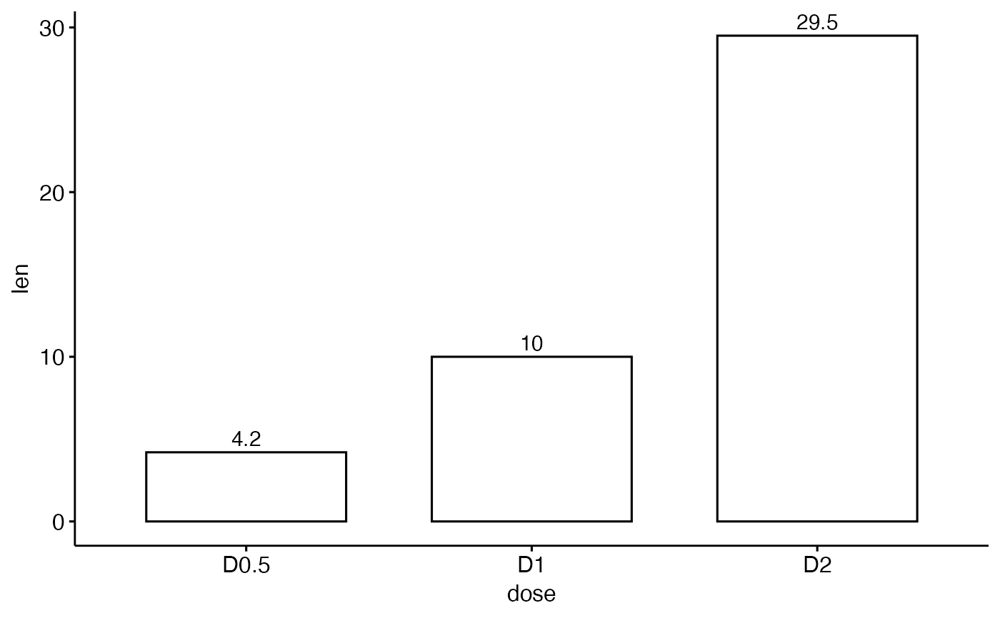
# Change width
ggbarplot(df, x = "dose", y = "len", width = 0.5)
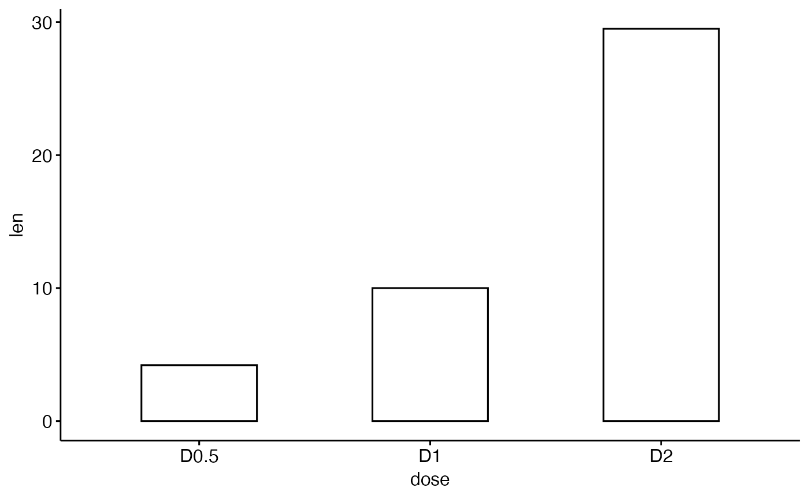
# Change the plot orientation: horizontal
ggbarplot(df, "dose", "len", orientation = "horiz")
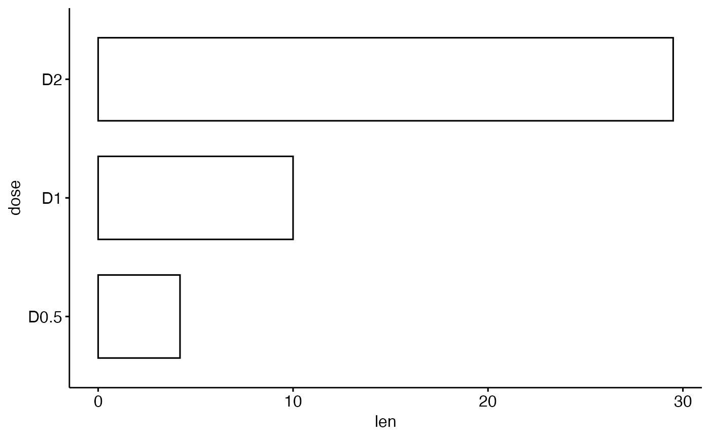
# Change the default order of items
ggbarplot(df, "dose", "len",
order = c("D2", "D1", "D0.5")
)
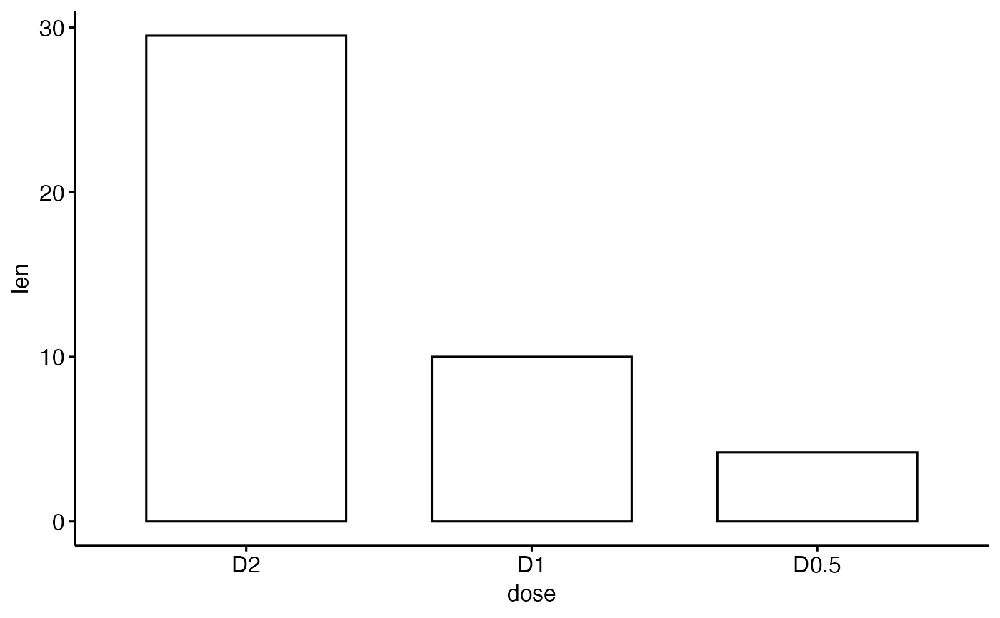
# Change colors
# +++++++++++++++++++++++++++
# Change fill and outline color
# add labels inside bars
ggbarplot(df, "dose", "len",
fill = "steelblue", color = "steelblue",
label = TRUE, lab.pos = "in", lab.col = "white"
)
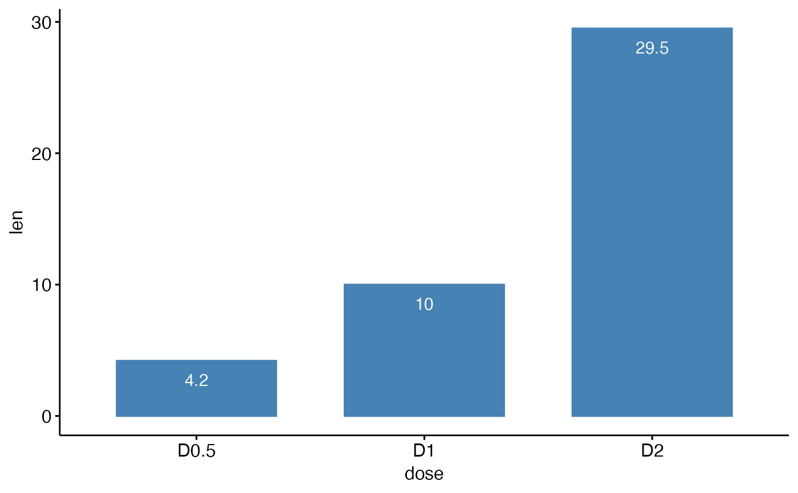
# Change colors by groups: dose
# Use custom color palette
ggbarplot(df, "dose", "len",
color = "dose",
palette = c("#00AFBB", "#E7B800", "#FC4E07")
)
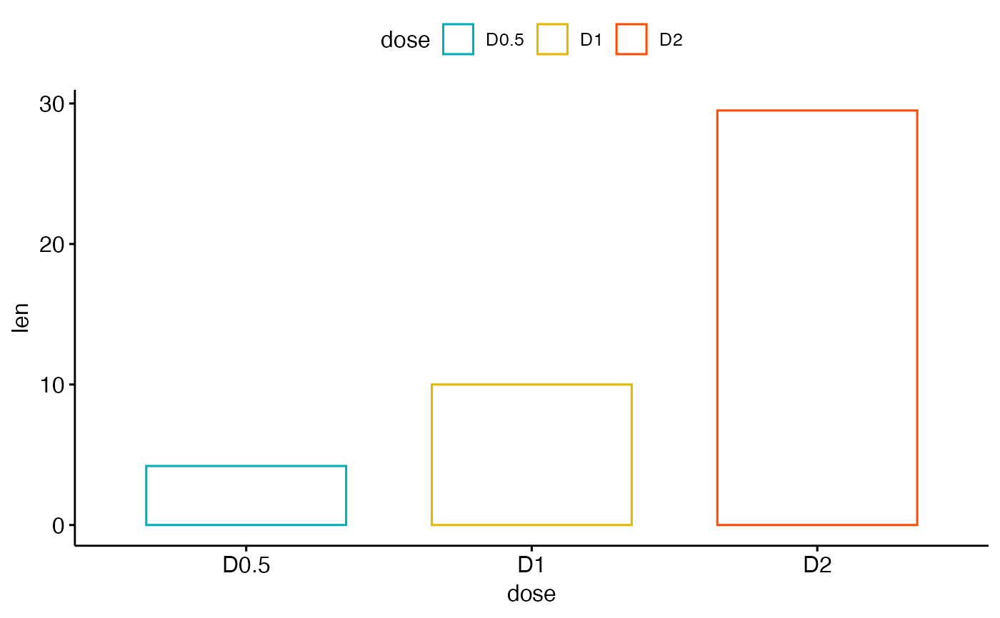
# Change fill and outline colors by groups
ggbarplot(df, "dose", "len",
fill = "dose", color = "dose",
palette = c("#00AFBB", "#E7B800", "#FC4E07")
)
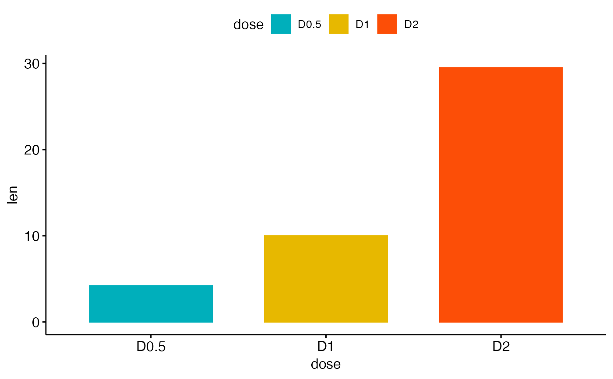
# Plot with multiple groups
# +++++++++++++++++++++
# Create some data
df2 <- data.frame(
supp = rep(c("VC", "OJ"), each = 3),
dose = rep(c("D0.5", "D1", "D2"), 2),
len = c(6.8, 15, 33, 4.2, 10, 29.5)
)
print(df2)
#> supp dose len
#> 1 VC D0.5 6.8
#> 2 VC D1 15.0
#> 3 VC D2 33.0
#> 4 OJ D0.5 4.2
#> 5 OJ D1 10.0
#> 6 OJ D2 29.5
# Plot "len" by "dose" and change color by a second group: "supp"
# Add labels inside bars
ggbarplot(df2, "dose", "len",
fill = "supp", color = "supp", palette = "Paired",
label = TRUE, lab.col = "white", lab.pos = "in"
)
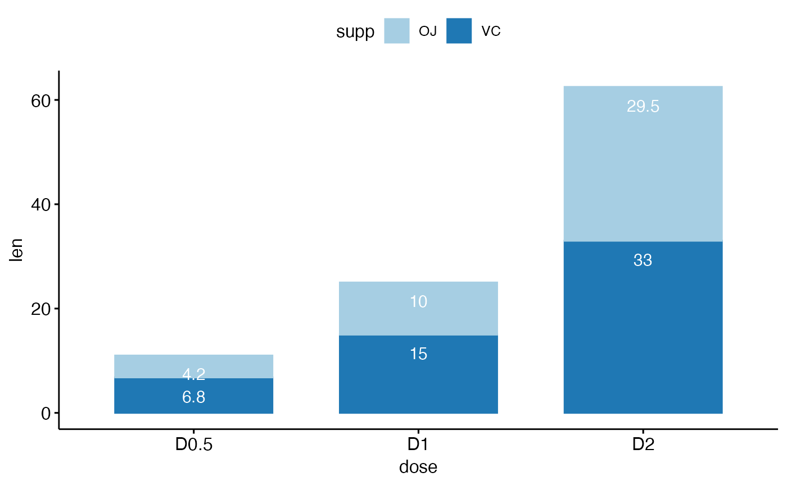
# Change position: Interleaved (dodged) bar plot
ggbarplot(df2, "dose", "len",
fill = "supp", color = "supp", palette = "Paired",
label = TRUE,
position = position_dodge(0.9)
)
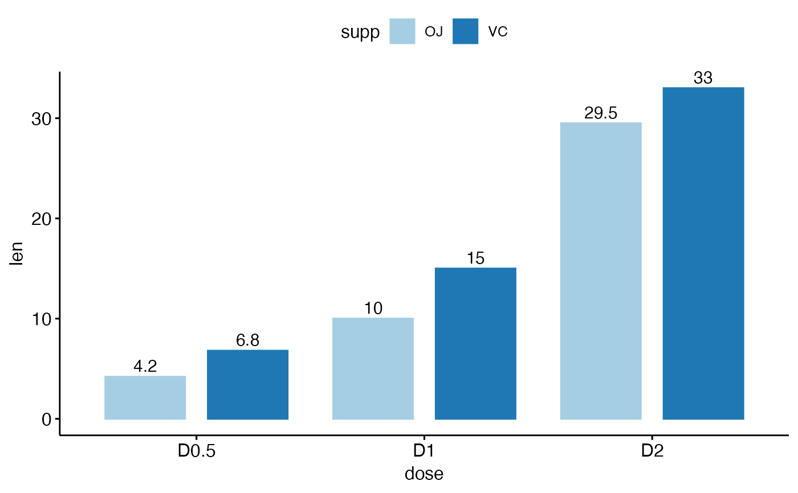
# Add points and errors
# ++++++++++++++++++++++++++
# Data: ToothGrowth data set we'll be used.
df3 <- ToothGrowth
head(df3, 10)
#> len supp dose
#> 1 4.2 VC 0.5
#> 2 11.5 VC 0.5
#> 3 7.3 VC 0.5
#> 4 5.8 VC 0.5
#> 5 6.4 VC 0.5
#> 6 10.0 VC 0.5
#> 7 11.2 VC 0.5
#> 8 11.2 VC 0.5
#> 9 5.2 VC 0.5
#> 10 7.0 VC 0.5
# It can be seen that for each group we have
# different values
ggbarplot(df3, x = "dose", y = "len")
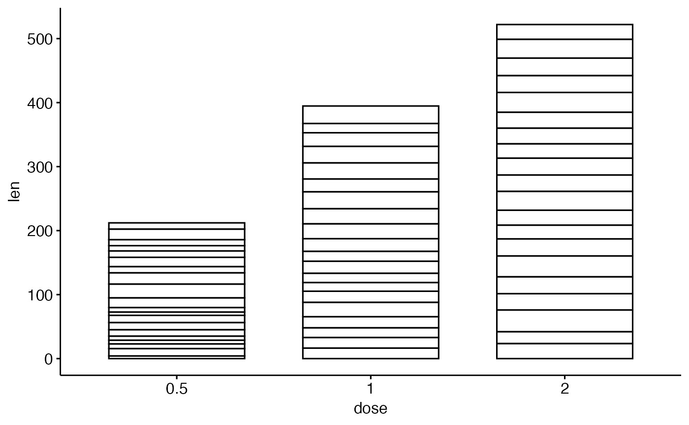
# Visualize the mean of each group
ggbarplot(df3,
x = "dose", y = "len",
add = "mean"
)
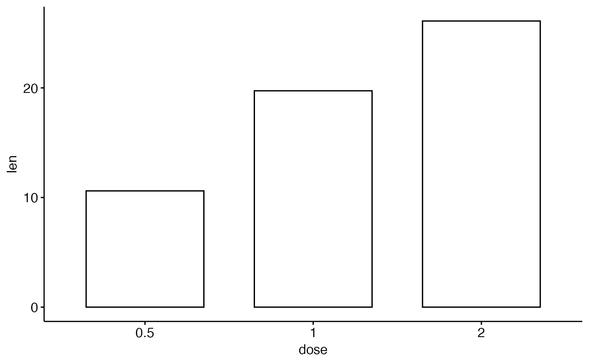
# Add error bars: mean_se
# (other values include: mean_sd, mean_ci, median_iqr, ....)
# Add labels
ggbarplot(df3,
x = "dose", y = "len",
add = "mean_se", label = TRUE, lab.vjust = -1.6
)
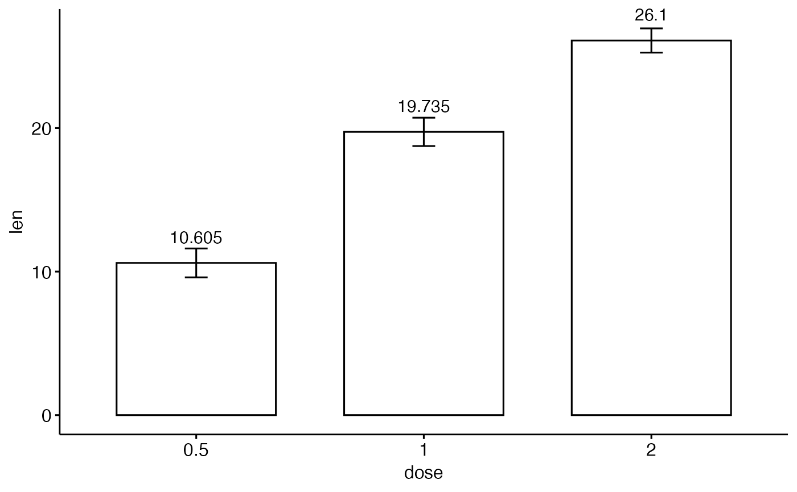
# Use only "upper_errorbar"
ggbarplot(df3,
x = "dose", y = "len",
add = "mean_se", error.plot = "upper_errorbar"
)
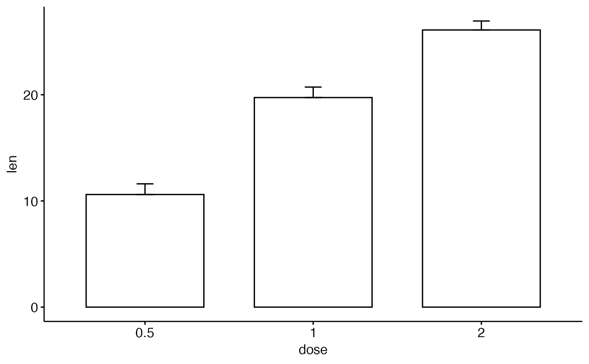
# Change error.plot to "pointrange"
ggbarplot(df3,
x = "dose", y = "len",
add = "mean_se", error.plot = "pointrange"
)
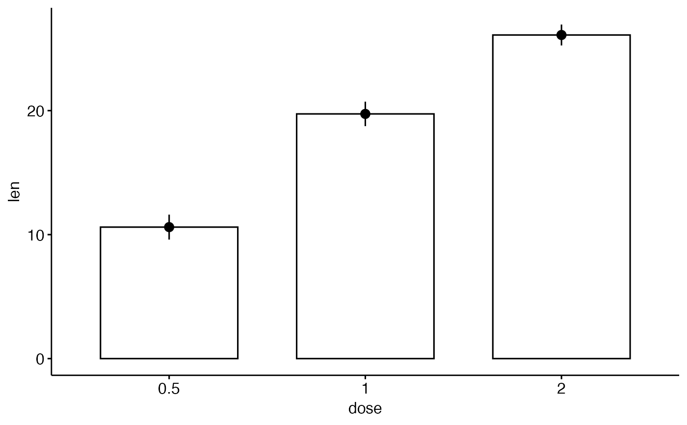
# Add jitter points and errors (mean_se)
ggbarplot(df3,
x = "dose", y = "len",
add = c("mean_se", "jitter")
)
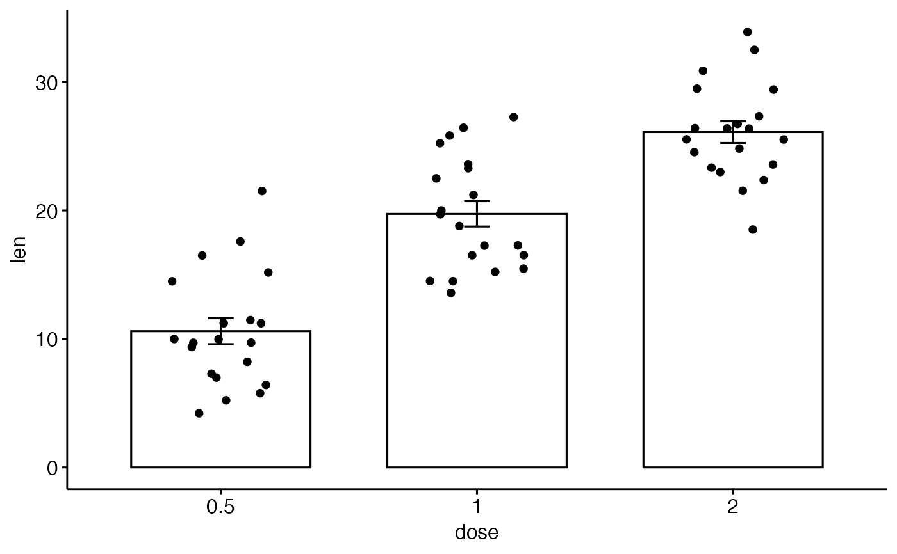
# Add dot and errors (mean_se)
ggbarplot(df3,
x = "dose", y = "len",
add = c("mean_se", "dotplot")
)
#> Bin width defaults to 1/30 of the range of the data. Pick better value with
#> `binwidth`.
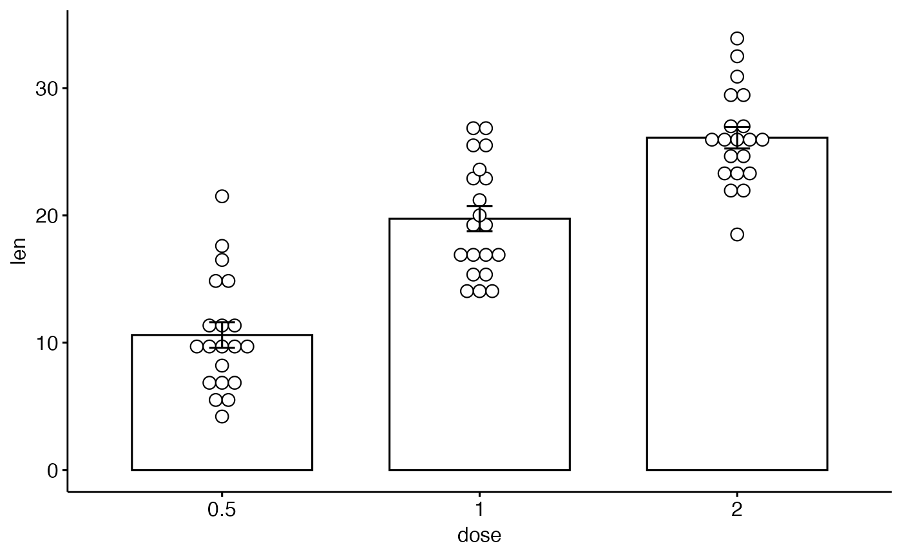
# Multiple groups with error bars and jitter point
ggbarplot(df3,
x = "dose", y = "len", color = "supp",
add = "mean_se", palette = c("#00AFBB", "#E7B800"),
position = position_dodge()
)
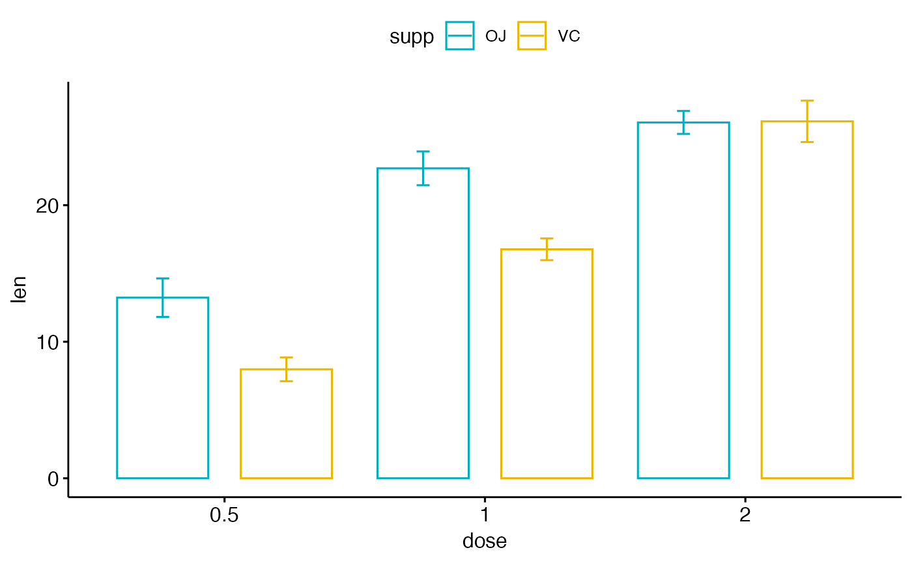
#